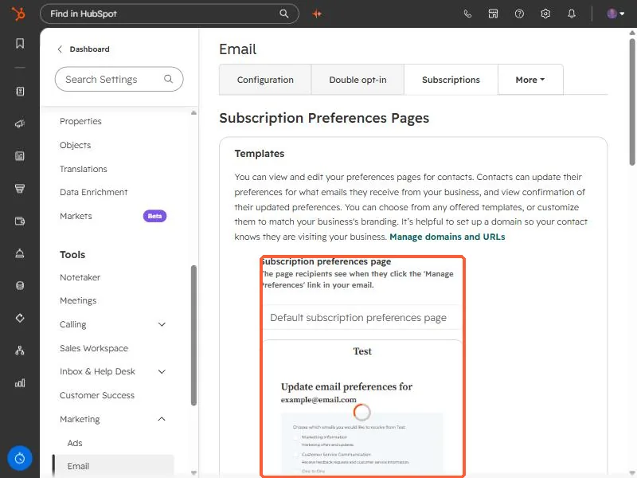
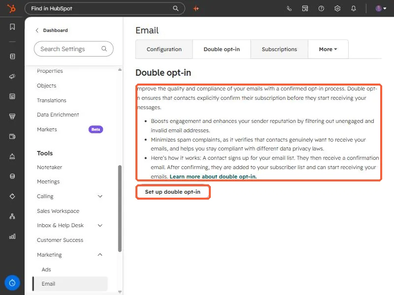
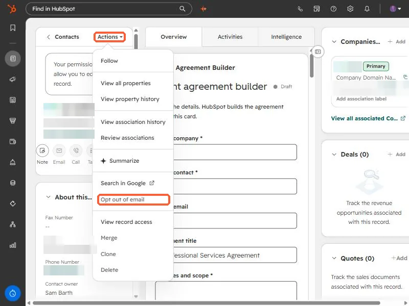
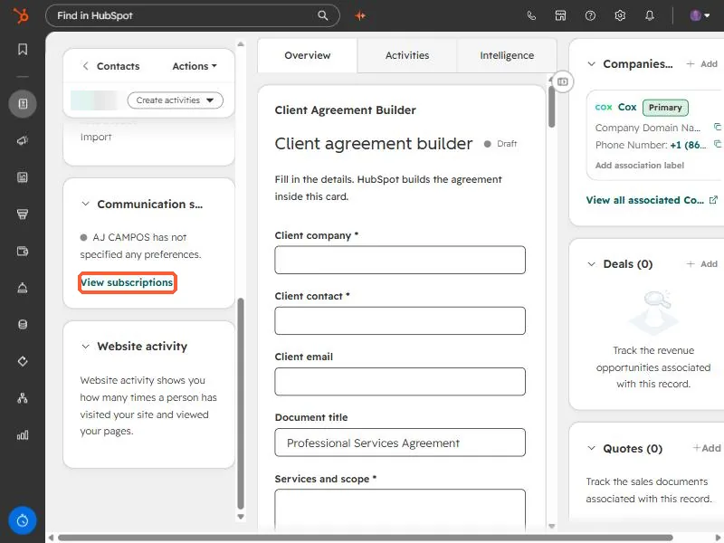
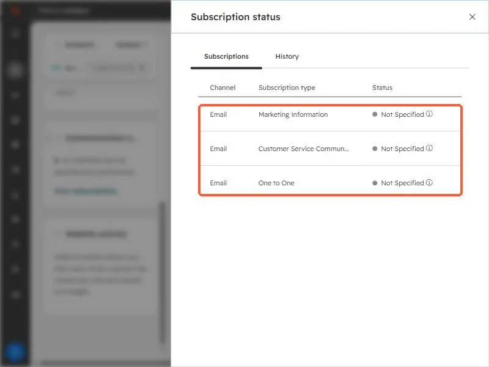
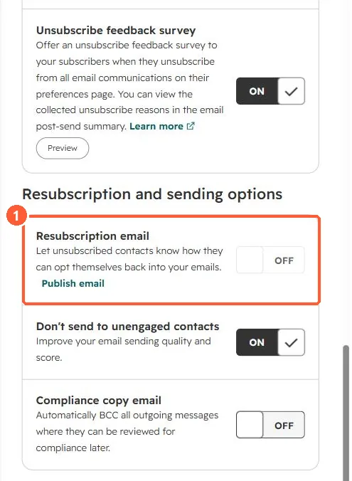
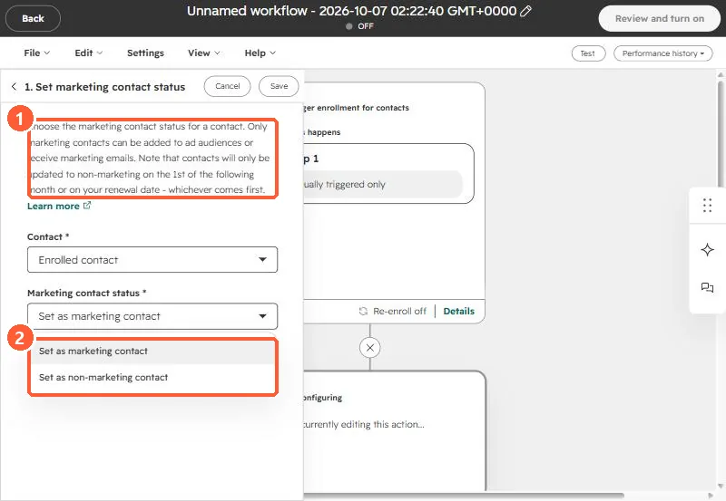

Short answer
Every marketing email goes out under a subscription type, and contacts can leave one type or all email. Opting a contact out of all email is Actions, Opt out of email on the record. Getting them back is harder on purpose: a contact who unsubscribed themselves has to resubscribe themselves (a preferences link, a subscription form, or a resubscription email). You can only reverse an opt-out your team added, with a legal basis. Separately, marketing contact status decides who you can market to and pay for; non-marketing contacts still get one-to-one, sequence and transactional email. Import old unsubscribes as opted out before your first send.
1. Subscription types
Set them up in Settings, Marketing, Email, Subscriptions. The defaults include Marketing Information, Customer Service Communication and One to One, and you can have up to 1,000. Contacts see them on the subscription preferences page when they click Manage preferences in an email:


- Drag types to change their order on the page. Edit one from its Actions menu. Archive types you no longer use.
- One to One and Customer Service Communication cannot be tied to a brand. If you archive One to One and later send a one-to-one email, HubSpot unarchives it.
- A contact who leaves one type stays subscribed to the others.
Connect your own domain so the preferences page shows your brand. See domains and SSL.
2. Double opt-in
With double opt-in on, new contacts get a confirmation email and cannot receive marketing email until they click it. Turn it on in the Double opt-in tab of email settings:


- It applies to contacts from HubSpot forms, non-HubSpot forms, lead ad forms and the Forms API.
- Existing contacts you already sent marketing email to count as confirmed.
- Basic double opt-in (free tools and Starter) covers every form with a default confirmation email; you can still change the sender, language and subject. Turning it on for only some forms and fully customizing the email needs Marketing Hub Professional or Enterprise.
- It covers marketing email only, not SMS or WhatsApp, and is tied to the email address. A new primary email needs confirming again.
- A workflow that tries to email an unconfirmed contact retries for up to one day, then stops.
3. Opt a contact out of all email
Open the contact, click Actions in the left sidebar, choose Opt out of email, and confirm. You need marketing access permissions.


Check the result in the Communication subscriptions card, then View subscriptions:




Opting out stops future marketing and one-to-one email. It does not stop transactional email, phone calls, or other brands if you use the Brands add-on, and it does not delete the contact. For a group, import an opt-out list (section 6).
4. Unsubscribe links in one-to-one emails
You can add an unsubscribe link to one-to-one emails sent from records and sequences. Clicking it opens the unsubscribe page for that subscription type, with a link to manage the others. If data privacy settings are off, the links are not included by default. Managing the defaults needs Super Admin or Account access permissions. The setting sits in Activities settings, see email logging settings.
5. Getting someone back: resubscribe
| How they opted out | How they come back |
|---|---|
| They unsubscribed themselves | Only they can resubscribe: Manage preferences in an old email, a form tied to a subscription type, or a resubscription email |
| Your team opted them out manually | A user can resubscribe them on the record with a legal basis and an explanation |
The Manage communication subscription workflow action follows the same rule: it cannot resubscribe someone who opted out themselves. The Resubscription email lets unsubscribed contacts ask to rejoin when they fill in a form that is not tied to a subscription type. It needs Marketing Hub Professional or Enterprise and is off until you publish the email (1):


Get the contact's consent before resubscribing anyone. Opted-out contacts still receive one-to-one and transactional email in the meantime.
6. Import old opt-outs before the first send
HubSpot recommends importing contacts who hard bounced or unsubscribed in your previous email tool as opted out, to protect your sending reputation. Use the opt-out import from Data integration, Import a file, and confirm by typing the number of contacts. HubSpot's KB also notes you can keep these contacts out of your billed total by deleting them and re-importing just their email addresses as opted out. See imports and deliverability.
7. Marketing contacts vs non-marketing contacts
With Marketing Hub Starter and above, only marketing contacts count toward your contact tier and price. They are the only ones you can send marketing email to or put in ad audiences. Non-marketing contacts can still get one-to-one sales email, sequences, registration emails, ticket emails, transactional email and feedback surveys.
- From a view: select contacts, then More, Set as non-marketing contacts.
- In bulk: Account & Billing, Marketing Contacts, Clean up contacts groups unsubscribed and bounced contacts for you.
- Automatically: the Set marketing contact status workflow action. Its note (1) says non-marketing changes apply on the 1st of the following month or your renewal date, whichever comes first (2).


Opted-out and bounced contacts are the obvious first group to switch off.
8. What is changing for 2027
- One-click unsubscribe is required by Gmail and Outlook.com for bulk senders. Keep the unsubscribe link and preferences page in every marketing email footer. See deliverability.
- Channels are separate. Double opt-in and email subscription types do not cover SMS or WhatsApp, which have their own subscriptions. Plan consent per channel.
- Brands split preferences. With the Brands add-on, an opt-out applies to the brand you are working in. Contacts can be subscribed to one brand and opted out of another.
Common questions
Can I resubscribe a contact who unsubscribed by mistake?
Not if they did it themselves. Send them a one-to-one email with a link to your preferences page or a subscription form so they can resubscribe.
Why can a contact who opted out still get my emails?
Opt-out covers marketing and one-to-one email. Transactional email is still delivered.
I set contacts to non-marketing but my count did not drop.
Non-marketing changes apply on the 1st of the next month or your renewal date, whichever comes first.
Sources
- HubSpot Knowledge Base: Set up email subscription types
- HubSpot Knowledge Base: Manage your contacts' messaging subscriptions
- HubSpot Knowledge Base: Set up double opt-in for emails
- HubSpot Knowledge Base: Understand double opt-in confirmation status
- HubSpot Knowledge Base: Unsubscribe or opt out contacts from email
- HubSpot Knowledge Base: View and edit contacts' subscription preferences
- HubSpot Knowledge Base: Manage unsubscribe links for one-to-one emails
- HubSpot Knowledge Base: Resubscribe contacts to your marketing emails
- HubSpot Knowledge Base: Import opted-out contacts
- HubSpot Knowledge Base: Understand marketing contacts
- HubSpot Knowledge Base: Set contacts as non-marketing